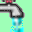
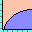

IMWVSupplemental
The Move Web View was added to the Hatchery Information System long after the Current Time View had been developed. The newly added view included more information than the Current View, and had some features that made no sense for the Current View. For example, a plugin dropped on the Move Web View could be dropped on either a rearing unit, a move, or nowhere. Each of these required slightly different interactions, while there are no moves to drop on in Current View, and drops on nowhere do nothing. Therefore, plugins that would be used in the Move Web View had to receive extra information, and had to be identified as being used in the Move Web View. That is why the IMWVSupplemental was created.
All objects that implement IMWVSupplemental need to also implement IHISGeneral. These objects are general plugins and need the initialization that IHISGeneral provides. The IMWVSupplemental implementation lets the program know that the object will be displayed in Move Web View, and will cause it to be given the Web View Information object in addition to the Event Raiser object, such that the IMWVSupplemental can react to events from Event Raiser as well as the specialized events for the Move Web View.
Because any plugin that implements IMWVSupplemental will also implement IHISGeneral, there are only a few methods to the IMWVSupplemental interface. That is not to say that the interface is just a flag. There are properties that have to be established for the interface in the Initialization method, which can direct how the plugin will behave in the Move Web View. Those properties can restrict dropping a plugin on just moves, just rearing units, or both. The interface is sparse, the impact is enormous.
Move Web View Plugins
What follows are the Move Web View plugins that have been created to date. Every plugin on this list must also implement the IHISGeneral interface, but what is included here is just those plugins that will be shown in the Move Web View. Some will also be shown in the Current Time View, in which case they will be included in the existing plugins list for the IHISGeneral Interface.
Existing Button Bar Plugins
Genetic Information

This plugin shows three different things, so the user must first choose what it is they want to look at. The first option is to show the genetic information for all fish currently on station. The second option is to show the genetic disposition for some species and brood year. The third option is to show the disposition for one genetic ID or parent ID.
The first will show the genetic IDs and numbers for fish currently at the hatchery. The second will only work so long as both species and brood year are available, but will show what happened to any genetic IDs from that group. They might still be on hand, they might have been released, and some number will have died. The final option is to see what happened to one group of fish. This will show where they ended up, if they are on hand, released, transferred, or dead. Of course, the numbers in all cases are just estimates with unknown error bars.
Line Diagnostics
The diagnostics plugins are not expected to be of any use to anybody. They were added to help diagnose errors while building the Move Web View, but since they were built as full fledged plugins, there was no reason to remove them.
The lines in the Move Web View are made up of a series of line segments. The plugin shows the lines endpoints for any line in the Move Web View. All this plugin does is changes what is shown in the tooltips for the lines in the Move Web View
Location Diagnostics
The diagnostics plugins are not expected to be of any use to anybody. They were added to help diagnose errors while building the Move Web View, but since they were built as full fledged plugins, there was no reason to remove them.
The locations in the Move Web View are rectangles. The location diagnostic shows some graphics information about the location. All the plugin does is changes what is shown in the tooltips for the lines in the Move Web View.
Lot Editor

This plugin is a mass lot number assignment/editor plugin. The idea is that several groups of fish can be selected at once, and they can all get the same lot number. If they have existing lot numbers, the user will be prompted before simply overwriting with the new number.
Mass Depth/Flow
This plugin is the same object as the IHISGeneral Mass Depth/Flow plugin and the IColorControl Percent Max Depth/Flow plugin. It is used for viewing, entering, and editing the depth, flow, and turnover for one or more rearing units.
Merge MW
The Move Web View displays a single Move Web. The view also allows new moves to be added by dragging from one location to another, or edited by dragging the destination of an existing move. But what happens if the new destination is a part of some other Move Web? The view only shows a single Move Web, so dragging to some other Move Web isn’t possible without some help. The purpose of this plugin is to bring in other Move Webs to share the screen with an existing Move Web. This can get busy, but it does mean that two Move Webs can be shown by the view at the same time such that moves that connect them can be added.
Note Log
The note log plugin intercepts and records error notes raised from anywhere in the program. The icon is dynamic, as it flashes and changes appearance if an error is received. Clicking on the button brings up a grid showing all errors and information related to them. These will then be either cleared by the user, or saved to the DB along with a time stamp. The primary use of the plugin is for debugging, but it has a general interest, as it shows quite emphatically when something has gone wrong.
Projected Release Site and Date
This plugin probably has to change a bit, as it depends on some mapping code that isn’t necessarily available to everybody. The idea for the plugin is that a hatchery can indicate where, and possibly when, a group of fish will be released. This is largely done so that the IColorControl Release Prediction plugin can be used to display how release groups are organized within the facility. Coloring the rearing units based on where the fish will end up, is a design I have seen employed at various hatcheries over the years, so this plugin allows the Hatchery Information System to replicate that. Managing the release sites is a bit problematic, as the best way to visualize release sites is using maps, and those tend to be somewhat proprietary.
Trait Hunter
The Trait Hunter plugin allows the user to choose one or more traits, at which point all moves that include those traits are colored to indicate whether the trait is present, projected, or partially projected. The latter category is when there are multiple traits, of which some are projected and some are not. A projected trait is one that the fish will eventually get, but have not yet gotten at the time of the move in question.
Trait Information
Another plugin that shows the versatility of the Hatchery Information System plugin system, this plugin is how the information in the tooltips are set up for the Move Web View. The user can select the trait categories they want displayed in the tooltip, and set the order for them. Choices can be retained, too, so it changes future displays.
Weight Mass Entry
This plugin is closely related to the Mortality Mass Entry plugin. In fact, it was created in a few hours by copying the mortality plugin, further showing the utility of the plugin concept. All the functionality is identical, except that the button for mark specific data was omitted, as weight is not mark specific. The comment button is still there, as is the ability to drag copy. Frankly, nobody should use either comments or drag copy for weight, as neither one makes much sense, but the functionality is there if somebody wants to use it.
Creating a similar plugin for lengths would be so easy it wasn’t worth doing. The only changes would be some wording, validation rules, and one attribute sent to the weight API, which both length and weight would use for storing data.
Existing Side Stall Plugins
Genetics Editor
The genetics editor plugin was created to fill a gap created by the Magic Fish plugin group. Those plugins could add fish with or without genetic information. This plugin allowed genetic information to be added or edited at later date.
Lot Editor
The plugin provides a means to see/edit the lot number for some location or move. The plugin is a finer tuned instrument than the mass lot editor plugin, and can work on moves rather than just rearing units.
Magic Fish

The Move Web View Magic Fish plugin is closely related to the Current Time View Magic Fish plugin, but there are just a few differences. The major difference is that the Move Web View Magic Fish plugin can be dropped on existing rearing units, nowhere, and some bottom stall icons. If dropped on an existing rearing unit, the plugin behaves the same as the Current Time View plugin, as fish are added to that location. Dropping on nowhere allows the user to select the location. If the new location is empty, this will create a new Move Web including the new location and this new move into it. If the drop is on either a release or transfer out bottom stall icon, then this creates what is known as a CMR or CMT Move Web, which is essentially just a stocking record.
In all cases, the stock, species and brood year are required, while a genetic ID and lot number are optional. Naturally, other plugins could be created with different requirements.
Mark Quality
When dropped on a location, this plugin allows the user to enter or edit the mark quality information for some mark. Of course, if the fish don’t have any marks, the plugin simply objects. Mark quality is a total number of fish, a number good, a number bad, and a number partial if that applies to the mark in question. Partial mark quality may or may not be desirable information for some hatchery operations, as partial marks may or may not be distinguishable at a later date. The option to enter partial marks is included for completeness.
The plugin packages up data and sends it off to the Mark Quality API.
Move Killer
The Move Web View allows viewing and editing moves, while this plugin extends that to allow for deleting moves. The user drops a bomb on a move. There are some checks, to make sure they are doing what they intend to, and killing off a move is only done if no other plugin or model objects to the deletion. It must be possible, after all.
Multi Characteristic Editor

The multi characteristics editor was created to fill a gap created by the Magic Fish plugin group. Those plugins could add fish with fixed stock, species and brood year. This plugin was added to allow for editing that information after the fact, while also adding other traits that are largely anonymous. Essentially, the anonymous traits are a way to add some arbitrary label to a group of fish.
While this plugin exists for both Move Web View and Current Time View, the behavior of the plugin can be quite different in each. In Move Web View, the traits in some early move of a large web can be edited, thereby causing trouble with other parts of the web as mixing traits may not be allowed. Since Current Time View is dealing only with the present time, the traits will already be mixed, so there already isn’t an issue and the plugin can’t create one. In Move Web View, problems are largely avoided by changing all of the traits for all of the moves at once.
Projected Release Manager
A side stall version of the Projected Release and Date plugin. The side stall version is easier to use for assignments to individual rearing units, but not as good for assignments to large numbers of rearing units.
Release Editor
The release editor is part of the release group of plugins. This plugin only makes sense in the Move Web View because it can only be dropped on release moves, which only exist in the Move Web View. The plugin allows the user to edit the traits and values in an existing release.
Trait Explorer

When dropped on a location, the plugin will allow the user to choose some set of one or more traits and show the number of fish in that location with those traits. The user can add and remove traits to see various numbers for the move or location in question. The time in question can be set when dropped on a location, so it is possible to see how the numbers of the traits change through time. Since moves are a fixed point in time, dropping the icon on a move will only show a fixed time.
Weight

When dropped on a location containing fish, a form pops up for the user to enter the weight into. The plugin responds to the weight units set for the Hatchery Information System, and will show a ghost number of what the Growth Core expects the weight to be, in those units. Therefore, if the user is about to enter a number that is radically different from what is shown, they’ll have some warning that they are either entering weight in the wrong units, or that something else might be wrong with the value.
This plugin is pretty nice if there are only a few weights to enter, which is often the case. The mass entry option was created to cover the case where lots of weights need to be entered. The mass entry version doesn’t have the ghost numbers, though, as I felt that might be too costly to populate in a timely fashion.
The plugin can only be used on locations, not on moves, as entering the weight for a move is not covered. In theory, it could be done, but not with this plugin.
Creating a plugin for length based on this plugin would be so easy I didn’t bother doing it. To change this for length would only entail changing the units, text, and validation. The plugin writes to the Weight API, but the weight API is actually a size API, as it takes either weight or length.
Existing Bottom Stall Plugins
Transfer I/O
This plugin is not fully finished. The intention is to allow transfers between hatcheries. Transfers are a complicated subject, as all of the information about the fish should be included in the transfer. As it turns out, the only thorough way to accomplish that is by transferring the entire move web. Without that, the receiving hatchery wouldn’t be able to correctly understand the relationships between dependent traits. Therefore, this plugin packages a move web into a zipped, XML-serialized, file.
The plugin also includes an importer, which is even more involved, and is the part that is not completed. Several steps have to be covered before testing such a plugin is possible, and I haven’t gotten all those steps completed, yet. For example, I have to have two different installations of Hatchery Information System, or two hatcheries in the same system, such that one can export and the other can import. The importer will be a side stall plugin, as the user will drop the fish wherever they should be going.
There also needs to be a transfer editor, which is a whole different can of worms, as the sender can edit a transfer package without alerting the receiver. There is no automatic way to handle a lack of communication between people.
Transport Release

While the icon is a truck, this release plugin allows for release by truck, pack, airplane, helicopter, boat, mixed, and other. Fish can be released by pounds of fish or numbers of fish, and a series of other traits can be tracked, including a few temperature measures, location, date ranges, and some transportation statistics.
There can be any number of different release plugins, since there can be any number of release traits that should be tracked. This plugin tracks what are probably the most common. A configuration option allows traits to be required or not, and allows for defaults to be set. That’s pretty convenient for hatcheries that always release their fish at the same place, or by the same method.
Volitional Release

The volitional release plugin is a variant on the transport release plugin. They are pretty similar, except that volitional releases will always have a date range, will never have a transport method, and are also lacking most of the other transportation statistics.
Existing Raceway Icon Plugins
Egg Info One
A simple reporting plugin that shows the species, stock, brood year, and what’s called a virtual stock (also called a pseudo stock) with the marks found on the eggs. The form has at least that one tab, but may well include other tabs, with different tabs for different stocks.
This plugin is similar to the Mark Report One plugin, but it’s simpler. Mixing stocks is possible, even with eggs, but virtually no marking is possible.
Genetic Information

This plugin was an early plugin created to show the utility of the trait component of the Move Web by showing where a group of offspring ended up in the hatchery. What the plugin shows is the parental groups found in the current location along with the numbers of each group. There are also tabs for the male and female parents, if that information is available. Whether or not that information is available depends entirely on what genetic information is entered.
Growth Graphics
This plugin is only available for locations that include fish, never for eggs. The plugin shows the growth of the fish over time in the location in question. Significant points along the curve are indicated by icons, such as measurements, estimated values, and changes in the intended growth due to changes in feed. The curve also projects the growth into the future, though not very far into the future.
The curve has a slider bar over it so that the user can see the estimated weight for any point in time on the curve. Also, the growth can be shown by month, or for the total duration in the location.
Mark Report One
A simple reporting plugin that shows the species, stock, brood year, and what’s called a virtual stock (also called a pseudo stock) with the marks found on the fish. The form has at least that one tab, but may well include other tabs, with different tabs for different stocks. Each tab will show a breakdown of the marks on that stock, in the case of mixed stock rearing units.
This plugin only works in rearing units that have fish. The Egg Info One plugin is used to show similar information for rearing units that hold eggs.
Numbers
This plugin does something slightly different if dropped on a move or dropped on a rearing unit. The reason for this is that there is a date range for rearing units, but no date range for moves.
The plugin shows the numbers over time, with icons on the graph for all moves in and out. The icons for transfers are different from creations, mortalities, and releases. Of course, showing all the mortalities in a year would create a total mess, so it is also possible to set a date range. The shorter the date range, the better the resolution will be. The graph includes a slider bar to see numbers on any specific date time.
If the plugin is dropped on a move, what is shown is the number in the move, but also the adjustment number. Adjustment numbers are not something that are immediately valuable for any particular use of the move webs, but for anybody who wants to see what some other count was, seeing the adjustment number is essential. There are many ways that could be done, and this plugin is just one of them.
Existing Menu Only Plugins
Communication Monitor

This plugin was largely created because I could. It shows the versatility of the plugin system, though it likely does little of interest to people. The plugin was mostly intended to help with diagnosing any communication issues with the Communication model. The form that pops up shows things like how many instances of the Hatchery Information System are active, what the last message was, who is the godfather, and things like that. There is also the ability to take over the Godfather role for the current instance, though since the role is usually automatic, taking over the role is mostly just for testing.
Communication Tester
Similar to the Communication Monitor, this plugin was created to help with diagnosing communication issues. The tests may not be all that useful, either, as they attempt to flood the system with lots of UDP messages and track how many get lost. The plugin might show a noisy system, but might also show nothing at all.
Condition Factor View

This plugin is part of the test harness group and is not intended for production, though the concept might have value beyond testing. The idea is to show what condition factor value is used for certain times. To make it more useful, it would be more reasonable to make this a side stall plugin, but condition factors, as shown in this plugin, are some internal data used by the Growth Core model. I haven’t figured out what should be shown to a wider audience in a more useful fashion.
SQL Display
The SQL Display plugin is part of the test harness group, and is not intended for production. The plugin works with the SQL Interceptor plugin, as it shows results, whereas the SQL Interceptor only gathers data. This plugin is only useful for some very specific testing.
One thing to note is that this plugin requires that the testing DB be available, as that’s where all results from this plugin are written. The testing DB will not be available on most installations of the Hatchery Information System.
SQL Interceptor
The SQL Interceptor plugin is part of the test harness group, and is not intended for production, but only as a means to facilitate automated testing of the Hatchery Information System. All that the plugin does is sets the Test Mode flag in the Event Raiser object. Any complying plugin will not write to the DB if this flag is set. Instead, any generated SQL is stored and written to the DB along with all parameters. In other words, this plugin allows the user to take some action and see all SQL that is generated and the order in which SQL statements are executed, along with the parameters used. Not all plugins will do the right thing with the Test Mode flag, though, and there is no way to enforce this. This plugin is only useful for some very specific testing.
One thing to note is that this plugin requires that the testing DB be available, as that’s where all results from this plugin are written. The testing DB will not be available on most installations of the Hatchery Information System.